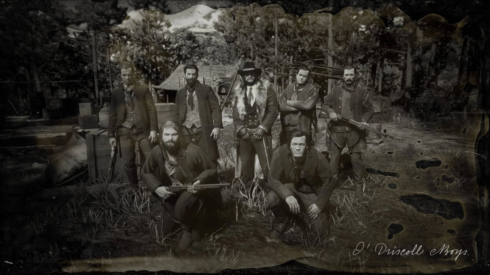
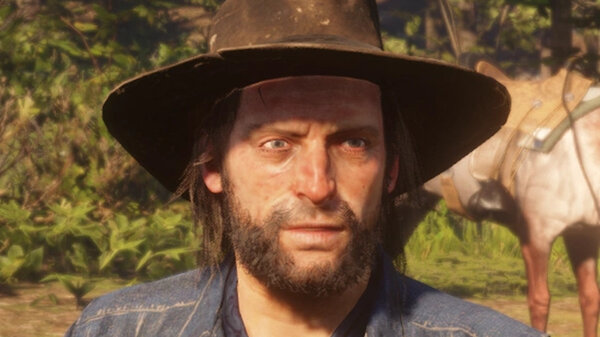
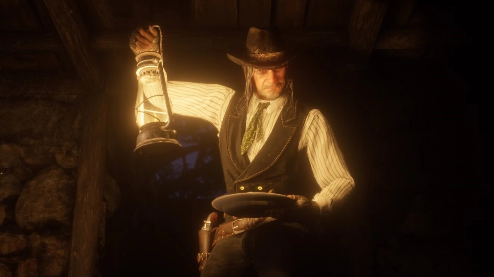

Character · O'Driscoll Boys
Colm O'Driscoll
Colm O'Driscoll is the leader of the O'Driscoll Boys, the rival outlaw gang and sworn enemies of the Van der Linde gang. The hatred between Colm and Dutch van der Linde is the oldest and deepest feud in Red Dead Redemption 2.
Ruthless and patient, Colm spends the game trading ambushes and reprisals with Dutch's gang until the rivalry ends at the gallows.
- Died
- 1899 (hanged)
- Status
- Deceased
- Nationality
- American
- Affiliation
- O'Driscoll Boys (leader)
- Rival
- Dutch van der Linde
- Games
- Red Dead Redemption 2
Biography
The feud with Dutch
The war between Colm and Dutch goes back years and has cost both men dearly: Colm's people killed Dutch's lover, Annabelle, and Dutch killed Colm's brother. By 1899 the two gangs ambush and rob one another at every opportunity.
Capture and hanging
After a failed parley and a string of clashes, including Colm's men capturing and torturing Arthur Morgan, Colm is eventually taken and hanged in Saint Denis. His public execution doubles as a trap, drawing O'Driscolls and lawmen alike.
Personality
Colm is cold, vengeful and calculating, a darker mirror of Dutch without the charm or the talk of loyalty. He treats his own men as expendable.
Relationships

Dutch van der Linde
His oldest enemy. The blood feud between them, paid in dead loved ones, shapes both gangs.

Arthur Morgan
Dutch's enforcer, whom Colm's men capture and torture during the feud.

Kieran Duffy
A former O'Driscoll who defects to the Van der Lindes, and whom Colm's men later kill.

John Marston
A Van der Linde gunman on the other side of the war Colm wages against Dutch.
Death and fate
Colm O'Driscoll is hanged in Saint Denis in 1899. With his death the O'Driscoll Boys lose their leader, though the feud has already done lasting damage to the Van der Linde gang.
Behind the scenes
Colm appears in Red Dead Redemption 2 (2018), and the O'Driscoll Boys are referenced across the series. He is the external rival that pushes Dutch's gang toward open war early in the story.
Trivia
- His gang, the O'Driscoll Boys, are the Van der Lindes' chief rivals.
- His feud with Dutch involves the deaths of Annabelle and Colm's brother.
- He is hanged in Saint Denis.
Gallery
